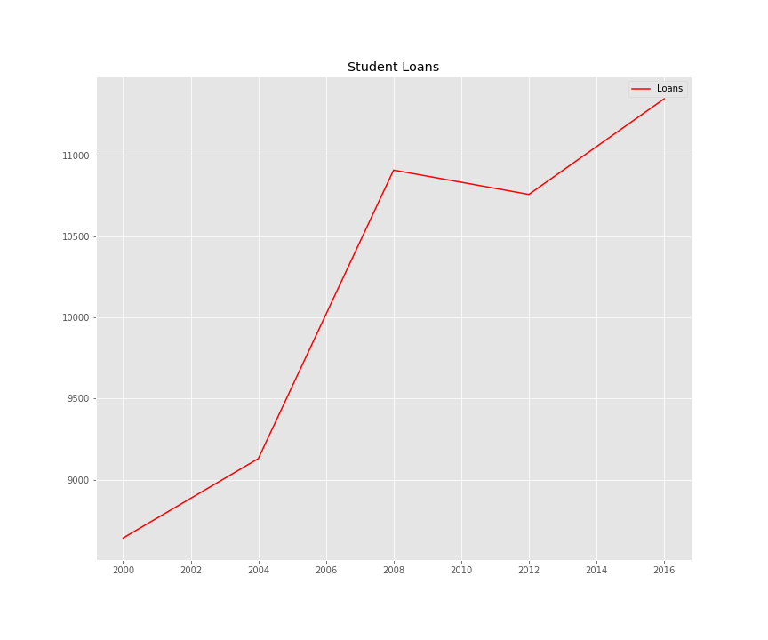
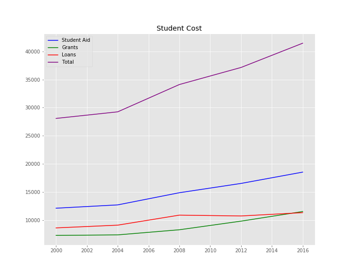

Debt and the 4 Year Degree
Student Loans

Considering the rise in Students Loans we were curious to see if the other known financial sources - Grants and Student Aid
- also increased.
Cost Summary/Breakdown

Since the rise of debt and cost of a 4 year college has increased - we were then led to ask what has enrollment done.